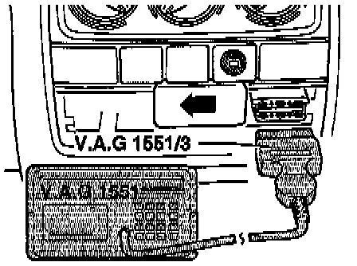

Function 01-Connecting VAG 1551 and Selecting Function
VAG 1551 Scan Tool, Connecting And Selecting Function
Data Link Connector Location Cabrio, Golf III, GTI And Jetta III:

NOTE: The ABS function is switched off in the ABS control module during the On Board Diagnostic (OBD) program.
Connecting Scan Tool
1. Locate Data Link Connector (DLC), refer to illustrations.
2. With ignition switched off, connect VAG 1551 scan tool with adapter cable VAG 1551/3.
- Indicated on display:
VAG On Board Diagnostic HELP
1-Rapid data transfer
2-Blink code output
NOTE:
^ Operating modes 1 and 2 are displayed alternately.
^ If the display remains blank, refer to Electrical tests steps 14 and 15.
^ Depending on the program, additional operating information can be printed out by pressing the HELP button on the VAG 1557 scan tool.
^ The right ARROW button is used to advance within the scan tool program sequence.
^ Press PRINT button to switch on printer (indicator lamp in button lights up).
3. Switch ignition on.
4. Press button -1- to select "Rapid data transfer" operating mode 1.
- Indicated on display:
Rapid data transfer HELP
Insert address word XX
5. Press buttons -0- and -3- to insert "Brake Electronics" address word 03.
- Indicated on display:
Rapid data transfer Q
03 - Brake Electronics
6. Press -Q- button to confirm input.
- Indicated on display:
3AO 907 379 ABS ITT AE 20 GI V00
Coding 03604 WSC XXXXX
ABS control module identification (example) is displayed:
- 3A0 907 379 = ABS control module identification number.
- ABS ITT AE 20 GI V00 = System designation.
- Coding 03604 = ABS control module code number
- WSC XXXXX = Dealership number (Work Shop Code)
7. Press the right ARROW button.
THEN IF
- Indicated on display:
Rapid data transfer HELP
Select function XX
NOTE:
^ A list of the possible functions is printed out after pressing the HELP button.
^ After pressing the right ARROW button, the VAG 1551 scan tool program returns to the display above.
List Of Selectable Functions
01 Check Control. Module Version (VAG 1551 scan tool connecting and selection function.)
02 Check DTC Memory. Function 02-Check DTC Memory
03 Output Diagnostic Test Mode (DTM). Function 03-Output Diagnostic Test Mode
04 Basic Setting (1). Function 04-Basic Setting
05 Erase DTC Memory. Function 05-Erase DTC Memory
06 End Output. Function 06-End Output
07 Code Control Module. Function 07-Code Control Module
08 Read Measuring Value Block. Function 08-Read Measuring Value Block
(1) )Only on models equipped with Electronic Differential Lock (EDL).
8. Enter selected function code, then press right ARROW button.
9. Follow instruction noted under selected function.
OR IF
- Any of the following are indicated on display:
Rapid data transfer HELP
Control module does not answer
Possible cause: fuse 2 for ABS Control Module
OR
Rapid data transfer HELP
K wire not switching to B+
The ignition must be switched on.
OR
Rapid data transfer
No signal from control module
Malfunctions have occurred at the start or during the scan tool program (external interference)
OR
Rapid data transfer
Error in communication link
Check VAG 1551/3 adapter cable.
Also check for battery positive voltage (B+) supply and check for proper Ground (GND) connection near ABS control module J104.
Refer to steps 15 and 16 in Electrical Tests.
10. After repairing possible causes of malfunction, again insert "Brake electronics" address word 03 and press -Q- button to confirm input.
11. Return to Step 5 to selected function for Diagnostic Trouble Code (DTC) or testing procedures.